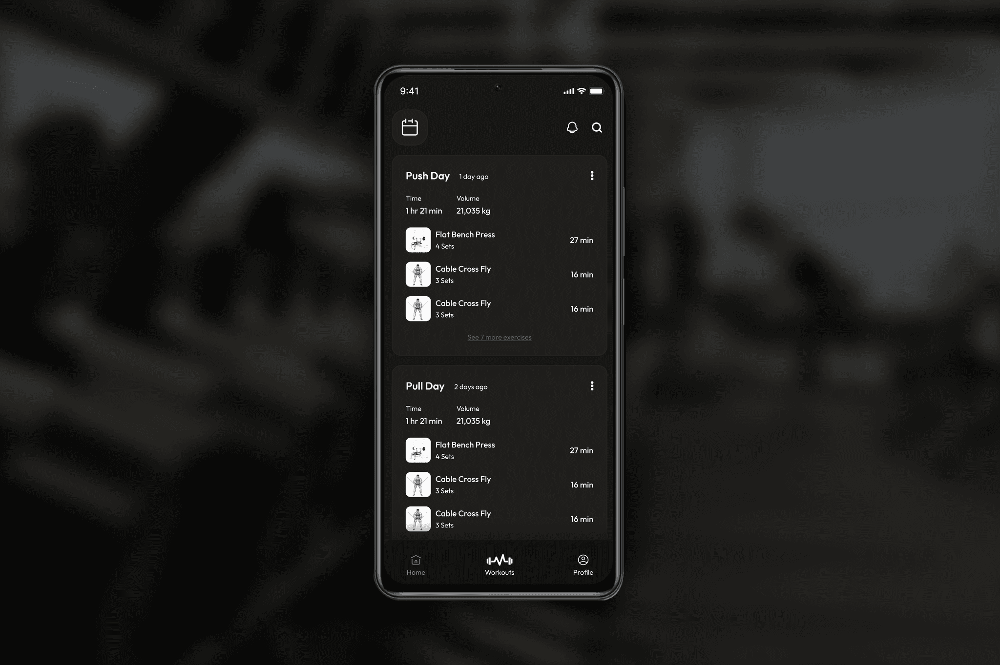
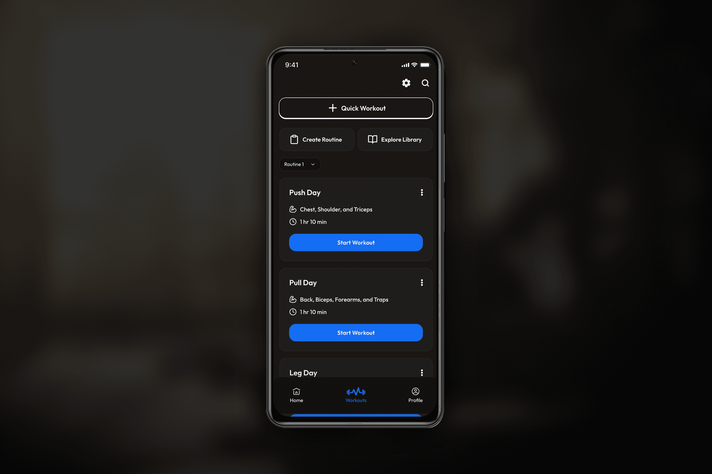
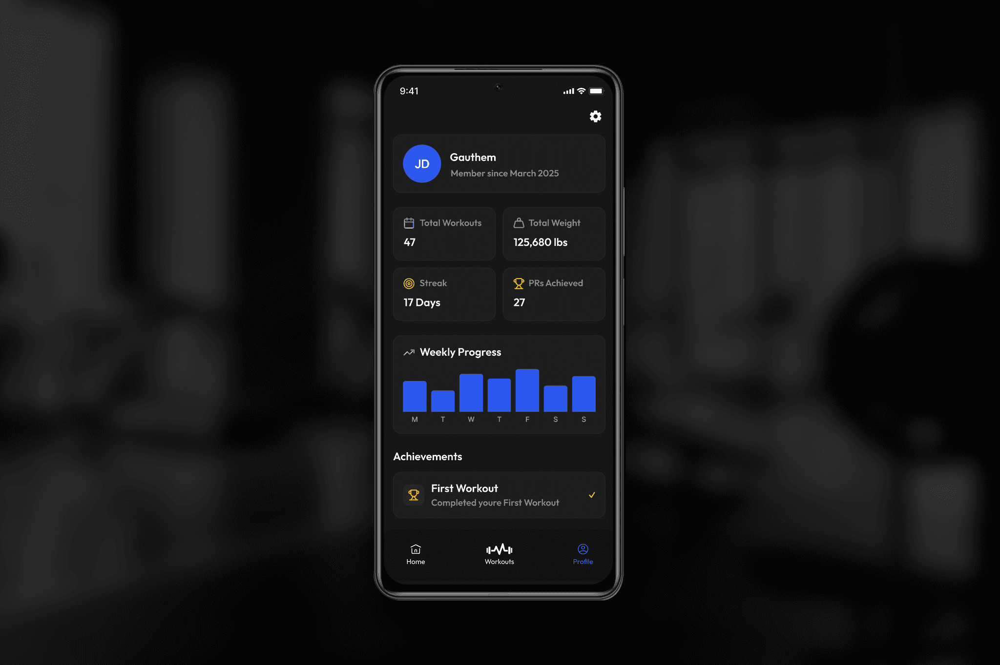

After struggling to find a workout app that met my preference for a minimalistic, dark mode interface focused purely on workout tracking, I decided to create my own solution. I designed the entire user interface and experience in Figma, inspired by a clean and calming dark-themed aesthetic. To bring the design to life as a functional mobile app for my phone, I developed it using Claude AI, which enabled efficient and seamless app creation aligned with my vision.



Problem Statement
Most workout apps available are visually busy and filled with features that clutter the experience, detracting from quick and clear workout tracking. Bright and complex UIs made it difficult for me to focus during workouts and added unnecessary friction when logging exercise details. I needed a streamlined, distraction-free, dark mode app that prioritized simplicity and usability.
Goals
- Build a minimalistic workout app with a dark theme optimized for ease of use in low-light environments.
- Design an intuitive card-based UI for workout sessions, exercises, and progress tracking.
- Implement straightforward navigation with essential app sections—Home, Workout Library, and Profile.
- Ensure accessibility with legible typography, proper contrast, and comfortable tap areas.
- Develop a functional mobile app from the Figma design using Claude AI to have a personal, usable tool.
User Persona
Myself – The Only User:
- A fitness enthusiast who values a calm, focused, and efficient workout logging experience.
- Prefers using apps with a minimalistic dark theme during early morning or late-night sessions.
- Looks for speed and clarity when reviewing or entering workout data on the go.
Features & User Flow
- Home/Dashboard: Displays cards summarizing recent and scheduled workouts with session details, exercise breakdowns, and total volume. Tapping a card opens detailed session views.
- Calendar: Month view highlighting workout days. Selecting a date reveals workouts for that day, with options to add or edit sessions.
- Workout Session Details: Scrollable exercise list including sets, reps, duration, and minimalist iconography.
- Workout Library: Browse predefined and custom routines easily accessible for planning.
- Profile: Displays personal statistics, progress highlights, and preference settings.
- Navigation: Fixed bottom navigation bar for swift movement between core sections.
Design Highlights
- Dark gray background (#121212) reduces eye strain with softer card backgrounds offering contrast.
- Off-white and gray typography layered for clear hierarchy without harsh brightness.
- Single accent color (muted blue) for interactivity and focus points.
- Minimalist line icons represent exercises clearly but unobtrusively.
- Ample spacing and large touch targets create an easy-to-use interface during active gym sessions.
- Accessibility features such as scalable text sizes and contrast compliance ensure inclusivity.
Development with Claude AI
Claude AI played a crucial role in translating the detailed Figma designs into a working mobile app. Its capabilities enabled rapid app development while maintaining fidelity to the original design aesthetic and functional requirements. This approach streamlined bringing MinFit from a visual concept to a practical tool I could use daily.
Outcomes & Reflection
- MinFit successfully provides a distraction-free, elegant dark mode workout app that supports streamlined workout logging.
- The card-based UI and straightforward navigation reduce cognitive load, allowing quick access to essential info.
- Creating the app through Claude AI from detailed Figma designs combined the strengths of visual design with intelligent development.
- The project confirmed the viability and power of integrating design tools like Figma with AI-driven development platforms for personal app creation.
Future Outlook
- Expanding customization options for workouts, themes, and notifications.
- Integrating with wearable devices or sensors for automatic data input.
- Enhancing onboarding to assist new users.
- Exploring social or community features for motivation and sharing.
Conclusion
MinFit embodies my vision of a minimal, user-centered workout app created through thoughtful design in Figma and brought to life via Claude AI development. This project highlights how combining robust design and AI-powered development platforms can empower individuals to build highly tailored, functional apps aligned with personal needs and aesthetics.